50 saved questions rebuilt from local capture only. Missed: Q8, Q13, Q14, Q17, Q26, Q30, Q40, Q41, Q42, Q50.
Q1
easy QID 5099
Correct
Which of the following is the diagnosis in this 68-year-old male with acute chest pain?
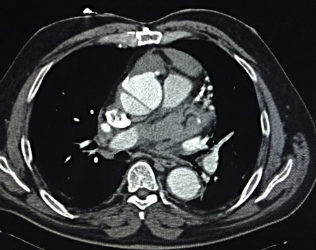
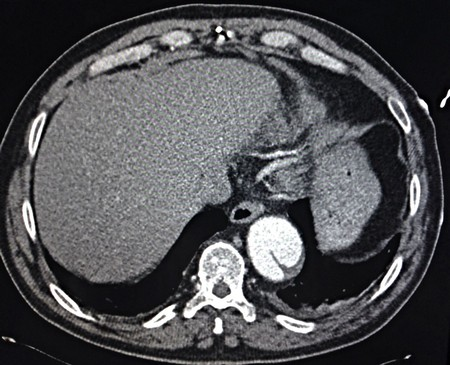
AStanford type B aortic dissection(4%)
BStanford type A aortic dissection(96%)
CThoracic aortic aneurysm(0%)
DIntramural hematoma(0%)
Your answerB
Correct answerB. Stanford type A aortic dissection
Vital Concept
Stanford type A dissection involves the ascending thoracic aorta and warrants urgent intervention.
Explanation
Stanford type A aortic dissection
The dissection is Stanford type A and involves the ascending thoracic aorta and the aortic arch and accounts for approximately 60% of thoracic aortic dissections. If the dissection extends to involve the descending thoracic aorta, it is still considered a Stanford type A dissection. This dissection requires surgical treatment.
Incorrect Answers:
A. The dissection in Stanford type B begins distal to the origin of the left subclavian artery and accounts for approximately 40% of thoracic aortic dissections. The treatment of this type is medical.
C. Aneurysm is pathologic dilatation of the artery rather than an intraluminal flap as in a dissection. The ascending aorta is considered aneurysmal if it reaches 4cm in diameter. The descending aorta is considered aneurysmal if it reaches 3 cm in diameter.
D. This is secondary to spontaneous rupture of the vasa vasorum which is the mural blood supply to the wall of the artery. The non-contrast CT will show a cuff of high attenuation around the aortic lumen in the acute phase that is low attenuation on post-contrast
CT. Intimal calcifications, if present, may be displaced inwards.
Vital Concept: Stanford type A dissection involves the ascending thoracic aorta and warrants urgent intervention.
Q2
moderate QID 20605
Correct
Which of the following is the correct BI-RADS classification and additional views needed (if any) given the screening mammogram of the left breast below? Use Figure/Media button to best visualize the provided images.
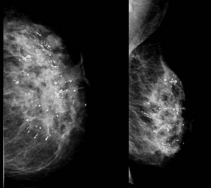
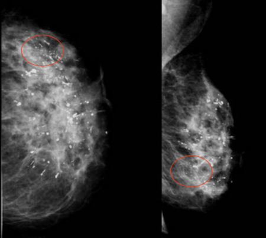
ABI-RADS 0; magnification views of the lower outer left breast(21%)
BBI-RADS 2; resume routine screening(10%)
CBI-RADS 0; magnification views of the lower inner left breast(62%)
DBI-RADS 0; magnification views of the upper outer left breast(4%)
EBI-RADS 5; image guided biopsy(3%)
Your answerA
Correct answerA. BI-RADS 0; magnification views of the lower outer left breast
Explanation
BI-RADS 0; magnification views of the lower outer left breast
In this screening mammogram, there are diffuse coarse calcifications throughout the breast that are benign in quality, most likely representing fibroadenomata. There are, however, in the lower outer quadrant of the breast, an area of more fine, possibly pleomorphic calcifications that would require further evaluation with magnification views (BI-RADS 0).
Incorrect Answers:
B. BI-RADS 2; resume routine screening - the possible pleomorphic calcifications in the lower outer left breast need additional work up; therefore BI-RADS 0 is most appropriate
c. BI-RADS 0; magnification views of the lower inner left breast - BI-RADS 0 is appropriate; however, magnification views should be obtained of the lower outer left breast (not lower inner)
D. BI-RADS 0; magnification views of the upper outer left breast - BI-RADS 0 is appropriate; however, magnification views should be obtained of the lower outer left breast (not upper outer)
E. BI-RADS 5; image guided biopsy - the pleomorphic calcifications in the lower outer left breast need additional work up; therefore, BI-RADS 0 is most appropriate at this point in the work up
Q3
easy QID 3100
Correct
A male patient presents reporting non-specific abdominal pain. Based on the computed tomography (CT) images displayed below, which of the following is the most likely diagnosis?
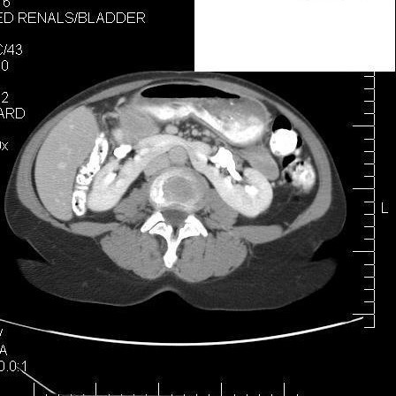
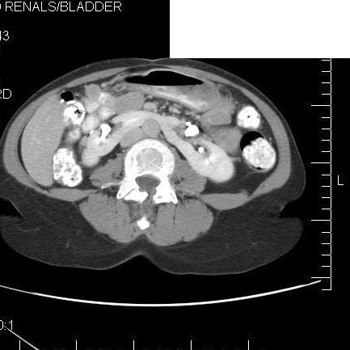
AAgenesis of the left kidney(0%)
BAgenesis of right kidney(0%)
CLeft renal mass(0%)
DHorseshoe kidney(100%)
ERight renal mass(0%)
Your answerD
Correct answerD. Horseshoe kidney
Vital Concept
Horseshoe kidney is the most common renal fusion anomaly and has frequent association with extrarenal anomalies (particularly spinal-pelvic malformations, Turner syndrome, VATER-VACTERL). Pelvocaliectasis, stone formation and reflux are common in patients with horseshoe kidney. Detection of horseshoe kidney requires comprehensive imaging evaluation for associated anomalies and long-term renal surveillance.
Explanation
Horseshoe kidney
Both kidneys are connected by a band of renal tissue that extends from the right kidney to the left kidney anterior to the abdominal aorta and the spine. This is a congenital anomaly and is often an incidental finding on routine sonography or radiology of the abdomen. It can be associated with an increased incidence of urinary tract infection or renal calculi.
Incorrect Answers:
A. B. This patient has the development of both kidneys.
C. There is no evidence of renal masses.
E. No evidence of mass lesions is present.
Vital Concept: Horseshoe kidney is the most common renal fusion anomaly and has frequent association with extrarenal anomalies (particularly spinal-pelvic malformations, Turner syndrome, VATER-VACTERL). Pelvocaliectasis, stone formation and reflux are common in patients with horseshoe kidney. Detection of horseshoe kidney requires comprehensive imaging evaluation for associated anomalies and long-term renal surveillance.
Q4
hard QID 22397
Correct
A 65-year-old female patient with a history of dialysis-dependent renal failure presents with worsening left upper extremity edema. Which of the following would be the most preferred initial treatment?
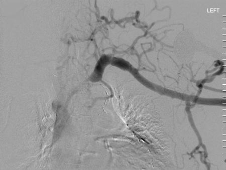
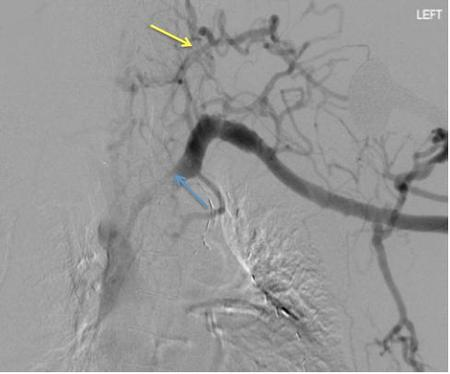
AIntravenous antibiotics(0%)
BAngioplasty alone(63%)
CAngioplasty and stent placement(34%)
DSurgical bypass(2%)
EEmbolization of collateral vessels(1%)
Your answerB
Correct answerB. Angioplasty alone
Vital Concept
Initial treatment of brachiocephalic fistula outflow stenosis is balloon angioplasty. Stenting should be considered for recurrent stenosis or persistent flow limitation after balloon angioplasty. Recent data supports covered stent-grafts over bare metal stents due to better patency rates and resistance to restenosis.
Explanation
Angioplasty alone
The imaging and clinical findings show central stenosis of the outflow segment of a dialysis arteriovenous fistula (left brachiocephalic vein – blue arrow). Note the surrounding collateral vessels (yellow arrow). The preferred treatment for this condition is angioplasty alone, with stenting reserved for refractory cases in which the stenosis does not resolve or there is no improvement of hemodynamics after angioplasty.
Incorrect Answers:
A. Venous stasis in the setting of outflow stenosis may place the patient at increased risk for cellulitis, and if there is associated cellulitis, the patient may require antibiotic therapy. However, the patient needs more definitive therapy for the improvement of hemodynamics.
C. Stenting is reserved for cases refractory to angioplasty alone because while the stent may assist in venous patency, it also increases the risk of thrombosis. As such, stenting should not be performed primarily in the treatment of central stenosis related to hemodialysis fistulae.
D. Surgical bypass is not recommended in this case, as patency rates for venous bypasses are not good, and catheter-based interventions are more suited to this task.
E. Collateral vessels develop as a means to circumvent the central stenosis. Embolization of these vessels would do nothing to improve fistula hemodynamics and places the patient at unnecessary risk.
Vital Concept: Initial treatment of brachiocephalic fistula outflow stenosis is balloon angioplasty. Stenting should be considered for recurrent stenosis or persistent flow limitation after balloon angioplasty. Recent data supports covered stent-grafts over bare metal stents due to better patency rates and resistance to restenosis.
Q5
moderate QID 56824
Correct
What is the most accurate description of the CT image of the upper abdomen shown below?
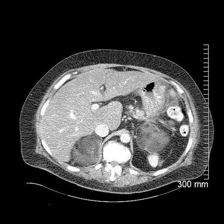
AOn this non-contrast image, there are bilateral adrenal masses consistent with active hemorrhage(6%)
BOn this contrast-enhanced image, there are bilateral adrenal masses consistent with metastatic disease(9%)
COn this non-contrast image, there are bilateral adrenal masses consistent with adenomas(1%)
DOn this contrast-enhanced image, there are bilateral adrenal masses consistent with myelolipomas(85%)
Your answerD
Correct answerD. On this contrast-enhanced image, there are bilateral adrenal masses consistent with myelolipomas
Explanation
On this contrast-enhanced image, there are bilateral adrenal masses consistent with myelolipomas
There is iodinated contrast within the aorta, inferior vena cava, and portal veins. Also, there is contrast within the colon, which is seen in the left upper quadrant. There are also bilateral adrenal masses demonstrating mixed fatty and soft tissue density most compatible with myelolipomas. They tend to contain macroscopic fat, as in this case. These are benign adrenal masses, which can grow large and can hemorrhage. Although these adrenal masses are not functioning tumors, there is an association with multiple endocrine abnormalities.
Incorrect Answers:
A. The presence of iodinated contrast within the aorta, inferior vena cava, and portal veins indicates that this is a contrast-enhanced CT. Active hemorrhage would be closer to the density of these vascular structures. However, there is no high-density material in the region of the adrenal masses on either side to suggest active bleeding.
B. The mixed fat and soft tissue density is not consistent with metastatic disease. Metastatic adrenal masses demonstrate soft tissue density.
C. Adrenal adenomas tend to demonstrate intracellular, microscopic fat, not mixed fat and soft tissue density. They also do not typically grow this large. Approximately 30% of adrenal adenomas do not contain enough intracellular fat to have a density of less than 10 HU and cannot be differentiated from non-adenomas on an unenhanced CT. These adenomas are called lipid-poor, and they can be diagnosed with dedicated adrenal-CT to look for fast wash-out.
Q6
easy QID 21144
Correct
A 43-year-old female patient with a history of aortic valve replacement presents with severe back pain. Which of the following is the diagnosis?
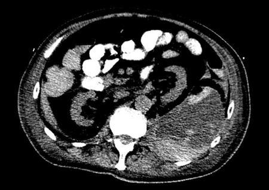
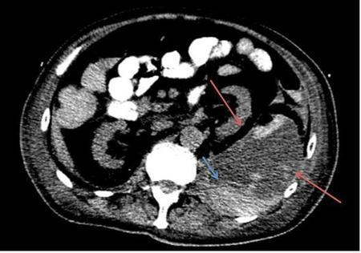
APyelonephritis(0%)
BRetroperitoneal abscess(2%)
CPyonephrosis(0%)
DRetroperitoneal hematoma(96%)
ERetroperitoneal liposarcoma(2%)
Your answerD
Correct answerD. Retroperitoneal hematoma
Explanation
Retroperitoneal hematoma
The presence of a large left retroperitoneal collection (red arrow) with a fluid-fluid level and dependent hyperdense component (blue arrow) should raise the suspicion for a retroperitoneal hemorrhage, especially in the setting of aortic valve prosthesis or any other condition requiring chronic anticoagulation. The fluid-fluid level in this case reflects a hematocrit effect in which the red cell component of blood settles dependently with plasma supernatant. Retroperitoneal hemorrhage may tamponade itself and spontaneously cease. However, refractory cases may require angiography and embolization.
Incorrect Answers:
A. Pyelonephritis may appear on CT with striated nephrograms, delayed nephrographic phase of contrast, perinephric stranding and/or fluid. Occasionally, perinephric fluid may become complicated so as to form a perinephric abscess, which would require drainage. The presence of a hematocrit level should suggest hematoma.
B. Retroperitoneal abscess typically appears as a fluid density collection with thick, enhancing rim, usually with prominent surrounding fat stranding. The hematocrit level seen in this case would be atypical in a case of retroperitoneal abscess.
C. Pyonephrosis is the presence of purulent fluid within a dilated renal collecting system. These require immediate drainage and antibiotics. If left untreated, they can rapidly become fatal.
E. Retroperitoneal liposarcoma should be suggested in the presence of a fat-density mass with any soft tissue component. Well-differentiated liposarcomas may appear to have no or minimal soft tissue component, while dedifferentiated liposarcomas may have a large amount of soft tissue component, such that they may appear to lack any fat component. Care must be taken when calling a fat-density retroperitoneal mass a lipoma, as the presence of any soft tissue component should raise suspicion of sarcoma. Frequently, lipomas will require periodic follow-up imaging to ensure the lack of a soft tissue component.
Q7
moderate QID 19217
Correct
Which of the following is the diagnosis, given the breast image below from a male patient?
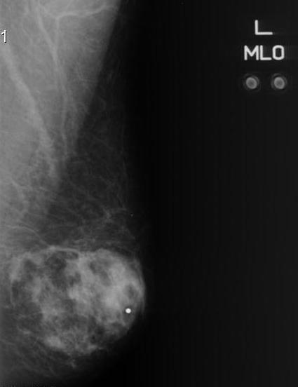
ASuspicious for invasive carcinoma(16%)
BUnremarkable male chest tissue(0%)
CGynecomastia(82%)
DFibrocystic change(1%)
Your answerC
Correct answerC. Gynecomastia
Vital Concept
Mammography is usually definitive for diagnosis of gynecomastia.
Explanation
Gynecomastia
Gynecomastia is benign proliferation of male glandular tissue appearing as subareolar fan-shaped or flame-shaped density centered on the nipple, classified as nodular (early), dendritic (longer-standing), or diffuse. It is always nipple-centered — a non-subareolar mass should raise concern for male breast carcinoma.
Incorrect Answers:
A. There is nothing suspicious for malignancy on these images. They show normal appearing fibroglandular tissue.
B. Subareolar breast tissue is seen on these images.
D. Fibrocystic changes cannot be defined by mammography.
Vital Concept: Mammography is usually definitive for diagnosis of gynecomastia.
Q8
hard QID 46775
Incorrect
The collection seen in this patient with right upper quadrant pain and fever was surgically removed and found to be an echinococcal cyst. Which of the following is the second most common site of involvement in this process?
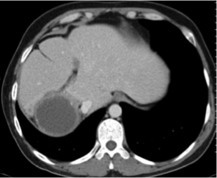
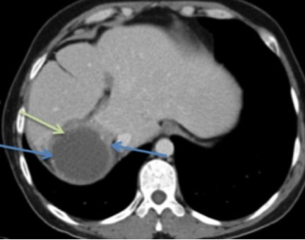
ALung(51%)
BBone(0%)
CMuscle(9%)
DSpleen(32%)
ECentral nervous system(8%)
Your answerD
Correct answerA. Lung
Vital Concept
Lung is the second most common site of the echinococcal cyst. Liver is the most common.
Explanation
Lung
The CT finding seen in this case, a unilocular well-defined thick-walled hepatic cyst (green arrow) with mural calcification (blue arrows), is a characteristic appearance of an E. granulosus infection. Humans are accidental hosts for this parasite, for which dogs serve as definitive hosts and sheep as intermediate hosts. Humans are infected by ingestion of food contaminated with Echinococcus eggs. Many potential sites of involvement can be affected by cystic hydatid disease. Following the liver, the lungs are the next most frequently involved site.
Incorrect Answers:
C. and E. CNS involvement is rare, seen in only 1 to 2% of cases, with muscle involvement being even more rare.
D. The spleen is infrequently involved (less than 5% of cases).
Vital Concept: Lung is the second most common site of the echinococcal cyst. Liver is the most common.
Q9
hard QID 47196
Correct
The resistive index is thought to provide a useful parameter for evaluating kidney physiology and function in many renal disorders. Which of the following is considered the upper limit of normal in native kidneys?
A0.5(1%)
B0.6(3%)
C0.7(68%)
D0.8(24%)
E0.9(4%)
Your answerC
Correct answerC. 0.7
Vital Concept
Normal renal resistive index ranges from 0.5 to 0.7, with values above 0.7 indicating elevated resistance from conditions like renal vein thrombosis, hydronephrosis, parenchymal disease, or external compression.
Explanation
0.7
The Doppler-derived renal resistive index is as follows: (peak systolic velocity – end diastolic velocity)/peak systolic velocity, and the mean value of three measurements at each kidney (upper, interpolar, and lower arcuate or interlobar arteries) is usually considered. It is a non-specific value that can be elevated in many scenarios including assessment of renal transplants, evaluation of renal artery stenosis, and chronic kidney disease among others. Normal renal resistive index ranges from 0.5 to 0.7 (C).
Vital Concept: Normal renal resistive index ranges from 0.5 to 0.7, with values above 0.7 indicating elevated resistance from conditions like renal vein thrombosis, hydronephrosis, parenchymal disease, or external compression.
Q10
moderate QID 2882
Correct
A 12-hour-old full-term newborn in the well-baby nursery develops bilious emesis. On physical examination, the newborn is tachypneic, irritable, and has apparent abdominal tenderness. Following an abnormal abdominal x-ray, an upper GI study with water-soluble contrast is performed (below). Which of the following is the best course of action?
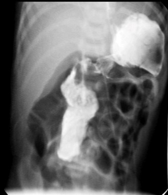
AAbdominal CT(2%)
BBarium enema(4%)
CEmergent surgery(90%)
DRestart feedings gradually(4%)
EMedical management(1%)
Your answerC
Correct answerC. Emergent surgery
Vital Concept
Bilious emesis in a newborn must raise suspicion of a midgut volvulus, and appropriate radiographic studies should be done. If confirmed, urgent surgical correction is needed.
Explanation
Emergent surgery
This represents a surgical emergency requiring immediate surgical intervention without delay. The upper GI findings of contrast failing to cross midline indicate abnormal positioning of the duodenojejunal flexure, which is pathognomonic for malrotation. The diffuse small bowel dilation strongly suggests possible midgut volvulus with compromised mesenteric blood flow, making this a time-critical situation where delay can lead to bowel necrosis.
Incorrect Answers:
A. Further diagnostic studies are not needed. Surgical correction is required.
B. The upper GI study shows a classic midgut volvulus. There is no need to study the large bowel.
D. This infant has a small bowel obstruction due to midgut volvulus. Urgent surgical repair is needed, and the infant should not be fed again preoperatively.
E. Medical management will not correct the obstruction. Surgery is required.
Vital Concept: Bilious emesis in a newborn must raise suspicion of a midgut volvulus, and appropriate radiographic studies should be done. If confirmed, urgent surgical correction is needed.
Q11
easy QID 3093
Correct
Ultrasound of the right lobe of the liver demonstrates the presence of an echogenic focus within the hepatic parenchyma just beneath the diaphragm. An additional echogenic structure is apparent within the adjacent right lower lung field bordering the diaphragm. Which of the following does the echogenic structure in the right lower lung likely represent?
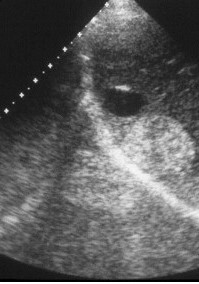
AAtelectatic lung(1%)
BLung mass(0%)
CPulmonary sequestration(1%)
DArtifact(98%)
Your answerD
Correct answerD. Artifact
Vital Concept
Mirror image artifact in sonography is seen when there is a highly reflective surface (e.g. diaphragm) in the path of the primary beam. The primary beam reflects from such a surface (e.g. diaphragm) but instead of directly being received by the transducer, it encounters another structure (e.g. a nodular lesion) in its path and is reflected back to the highly reflective surface (e.g. diaphragm). It then again reflects towards the transducer.
Explanation
Artifact
The diaphragm can act as a strong specular reflector that redirects the ultrasound beam toward liver parenchyma, which can then reflect back to the diaphragm and finally to the transducer. This longer path length causes the ultrasound system to calculate an artifactual deeper location for the liver tissue, creating a false duplicate image equidistant on the opposite side of the diaphragm (appearing in the lung, as seen in this case). This mirror image artifact occurs because ultrasound assumes all echoes return after a single reflection, but this represents a double reflection pathway with increased transit time falsely interpreted as greater depth.
Incorrect Answers:
A. This is a false image. The sonographic morphology of atelectatic lung may resemble hepatic parenchyma, often referred to as "tissue-like" or "hepatized" in appearance.
B. C. This is a symmetrical appearance on both sides of diaphragm which is not consistent with lung mass or sequestration.
Vital Concept: Mirror image artifact in sonography is seen when there is a highly reflective surface (e.g. diaphragm) in the path of the primary beam. The primary beam reflects from such a surface (e.g. diaphragm) but instead of directly being received by the transducer, it encounters another structure (e.g. a nodular lesion) in its path and is reflected back to the highly reflective surface (e.g. diaphragm). It then again reflects towards the transducer.
Q12
moderate QID 43670
Correct
Which of the following is the most likely diagnosis in this 50-year-old patient with headaches and ataxia?
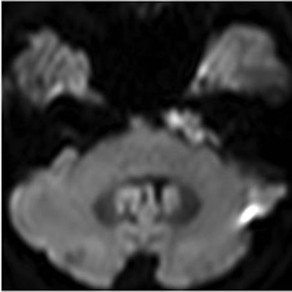
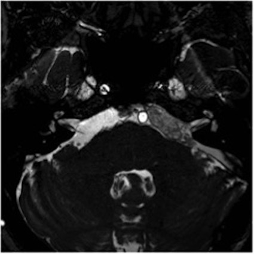
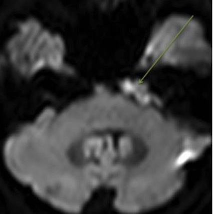
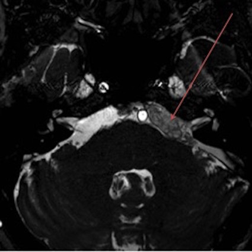
AMeningioma(6%)
BVestibular schwannoma(10%)
CEpidermoid cyst(82%)
DFacial nerve schwannoma(1%)
EArachnoid cyst(1%)
Your answerC
Correct answerC. Epidermoid cyst
Explanation
Epidermoid cyst
The T2 image shows a cerebellar pontine angle (CPA) mass with a signal intensity that is lower than CSF (secondary to pulsation artifact) (red arrow). The DWI sequence shows that this lesion has restricted diffusion (green arrow). These are imaging features of an epidermoid cyst. Intracranial epidermoid cysts are relatively common congenital lesions and are the third most common CPA mass. They result from the inclusion of ectodermal elements during neural tube closure. The typical presentation is in middle age and is secondary to mass effect on adjacent structures. Their appearance follows that of CSF on CT and MRI, with the exception of DWI, which demonstrates restricted diffusion. On FLAIR sequences (not shown) there is often incomplete signal suppression (the so-called dirty CSF appearance).
Incorrect Answers:
A. Cerebellar pontine angle meningioma is described as a homogeneously enhancing mass. They rarely expand the internal auditory canal (IAC), as they more involve the CPA. A broad-based, enhancing dural tail is typically present, and one may see calcifications on CT.
B. Vestibular schwannoma is a solid enhancing mass that is often described as having a mildly heterogeneous appearance. It primarily involves the IAC, with widening of the porus acousticus. They extend into the CPA if they reach a large enough size. A fusiform of dumbbell shape (as with nerve sheath tumors elsewhere) may be present, and when large they have been described as having an ice cream cone configuration.
D. Facial nerve schwannoma is a rare tumor, typically confined to the temporal bone, as it originates in the facial nerve canal. It may occasionally extend into the IAC. CPA extension would be highly unlikely, however, as it would require the mass to be quite large.
E. An arachnoid cyst is a relatively common CPA mass. It follows fluid signal intensity on all sequences including FLAIR. It is distinguished from a CPA epidermoid cyst by its lack of restricted diffusion.
Q13
hard QID 2701
Incorrect
Which of the following is the most common mammographic appearance of tubular carcinoma?
AWell-circumscribed mass(14%)
BIsolated calcifications(3%)
CSmall spiculated mass(67%)
DArchitectural distortion(15%)
Your answerB
Correct answerC. Small spiculated mass
Vital Concept
Mammographic features of tubular breast carcinoma include small spiculated mass with possible associated calcifications.
Explanation
Small spiculated mass
Tubular carcinomas most commonly present as a small spiculated mass on mammography, with or without associated calcifications.
Incorrect Answers:
A. The margins of tubular carcinoma are typically spiculated, not well-circumscribed.
B. Calcification can be seen with tubular breast carcinoma, though it is more classically associated with a small spiculated mass and not in isolation.
D. Architectural distortion is a disruption of the expected appearance of breast tissue with no definitive mass present, commonly with evidence of retraction or radiating linear opacities. This appearance is more closely linked with early invasive breast carcinoma sand/or ductal carcinoma in situ.
Vital Concept: Mammographic features of tubular breast carcinoma include small spiculated mass with possible associated calcifications.
Q14
easy QID 39298
Incorrect
Which of the following statements is false regarding hand hygiene in the healthcare setting?
AHand hygiene should be performed after contact with monitoring equipment in the immediate vicinity of the patient.(2%)
BSoap and water are specifically recommended for hand hygiene in cases of suspected exposure to Bacillus anthracis.(2%)
CWhen hands are visibly dirty, alcohol-based hand sanitizer is sufficient.(94%)
DHand hygiene must be performed for at least 20 seconds to be adequate.(3%)
Your answerD
Correct answerC. When hands are visibly dirty, alcohol-based hand sanitizer is sufficient.
Vital Concept
From 2025 ABR Non-Interpretive Skills Study Guide:
Explanation
When hands are visibly dirty, alcohol-based hand sanitizer is sufficient.
Incorrect Answers:
Answers A, B, and D are all true statements with respect to hand hygiene.
When hands are visibly dirty, soap and water are the recommended method of hand hygiene. Alcohol-based sanitizers are sufficient in cases where there is no visible soiling of the hands.
Vital Concept: From 2025 ABR Non-Interpretive Skills Study Guide:
"Alcohol-based hand sanitizers are the most effective products for reducing the number of bacteria on the hands. When hands are not visibly dirty, alcohol-based hand sanitizers are the preferred method for cleaning one’s hands in the healthcare setting. Soap and water are recommended when hands are visibly dirty, before eating, after using a restroom, or after known or suspected exposure to Clostridium difficile, norovirus, or Bacillus anthracis.
Hand hygiene should be performed:
1) Before eating
2) Before and after having direct contact with a patient’s skin
3) After contact with blood, body fluids or excretions, mucous membranes, nonintact skin, or wound dressings
4) After contact with inanimate objects in the immediate vicinity of the patient
5) If hands will be moving from a contaminated-body site to a clean- body site during patient care
6) After glove removal
7) After using the restroom."
Q15
moderate QID 56262
Correct
Complications from the deterministic effects of radiation exposure to the skin can range from minor to major in severity. Which of the following skin dose is the threshold for transient erythema following an interventional procedure?
A1 gray(9%)
B2 gray(85%)
C5 gray(6%)
D15 gray(1%)
Your answerB
Correct answerB. 2 gray
Vital Concept
Transient erythema is a deterministic radiation effect with a threshold dose of 2 Gray, typically occurring approximately 24 hours after exposure.
Explanation
2 gray
At skin radiation dose levels beginning above 2 gray, transient cutaneous erythema would be expected. When long fluoroscopic times are expected, the risk of adverse cutaneous events may be reduced by C-arm rotation, tight collimation, and/or splitting the procedure. Patients should be counseled when skin dose reaches these levels as cutaneous erythema may not be present for several weeks, to avoid misdiagnosis and additional work-up. Transient erythema is usually self-limited and typically does not require treatment.
Incorrect Answers:
A. Doses below 2 gray would be unlikely to cause any adverse cutaneous effects.
C. Doses ranging from 5 to 10 gray would most likely cause chronic erythema.
D. Doses ranging from 10 to 15 gray would most likely cause dry or moist desquamation.
Vital Concept: Transient erythema is a deterministic radiation effect with a threshold dose of 2 Gray, typically occurring approximately 24 hours after exposure.
Q16
moderate QID 3095
Correct
Which of the following options is the most likely explanation of the findings corresponding to the upper two arrows on this intravenous pyelography (IVP) image?
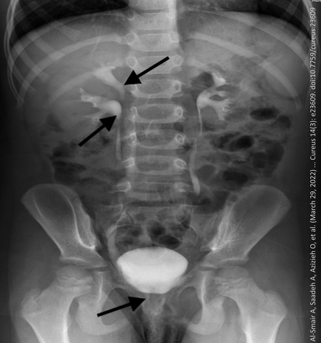
ARenal cortical cyst(1%)
BRenal calculus(1%)
CVesical calculus(2%)
DUreterocele(3%)
EDuplex kidney with duplication of ureter(93%)
Your answerE
Correct answerE. Duplex kidney with duplication of ureter
Vital Concept
When only proximal ureters/pelves are opacified on IVP, complete versus incomplete duplication cannot be definitively established since the distal ureteral course and bladder insertion points are not visualized. Delayed imaging, cross-sectional imaging, or cystoscopy can be used for definitive classification.
Explanation
Duplex kidney with duplication of ureter
The two arrows correspond to the upper and lower moieties of a duplicated right renal pelvis. Additional IVP radiographs, MR urogram or CT urogram may be obtained to more thoroughly assess for complete duplication of the collecting system and the ureters on the right side. This is a congenital anomaly and is often associated with vesico-ureteric reflux and other related urinary pathologies.
Incorrect Answers:
A. IVP is not the examination of choice for visualization or renal cysts.
B. C. There is no definitive evidence of renal, ureteric or vesical calculi.
D. No ureterocele visualized; this would be seen at the level of the bladder, not in the area of the upper two arrows.
Vital Concept: When only proximal ureters/pelves are opacified on IVP, complete versus incomplete duplication cannot be definitively established since the distal ureteral course and bladder insertion points are not visualized. Delayed imaging, cross-sectional imaging, or cystoscopy can be used for definitive classification.
Q17
hard QID 2942
Incorrect
A patient with a history of anaphylaxis to penicillin is scheduled for an elective contrast-enhanced CT of the abdomen and pelvis. The patient has never received intravenous contrast media before. Which of the following statements is true?
AThe patient is at increased risk for an allergic-like reaction to contrast media(67%)
BThere is no increased risk for an allergic reaction to contrast media(26%)
CA shellfish allergy is more concerning than a penicillin allergy(0%)
DB and C(3%)
EA and C(3%)
Your answerB
Correct answerA. The patient is at increased risk for an allergic-like reaction to contrast media
Vital Concept
According to most recent ACR manual on contrast media about allergic reactions patients with unrelated allergies are at a 2- to 3-fold increased risk of an allergic-like contrast reaction, but due to the modest increased risk, restricting contrast medium use or premedicating solely based on unrelated allergies is not recommended.
Explanation
The patient is at increased risk for an allergic-like reaction to contrast media
Patients with allergic histories have increased risk of allergic-like contrast reactions because underlying immune system hyperreactivity predisposes to hypersensitivity responses through multiple pathways.
Incorrect Answers:
B. Prior any allergic diathesis predisposes individuals to other reactions.
C. There is no difference between a shellfish allergy and a penicillin allergy.
Vital Concept: According to most recent ACR manual on contrast media about allergic reactions patients with unrelated allergies are at a 2- to 3-fold increased risk of an allergic-like contrast reaction, but due to the modest increased risk, restricting contrast medium use or premedicating solely based on unrelated allergies is not recommended.
Q18
moderate QID 86015
Correct
A 32-year-old presents to the emergency department with a severe headache and vision changes for the last 6 hours. She also reports left lower quadrant pain. She has a history of polycystic ovarian syndrome but is otherwise healthy. She is afebrile with a heart rate of 100 beats/min and a blood pressure of 130/80 mm Hg. Physical examination reveals bitemporal hemianopsia and left lower quadrant tenderness. Abdominal ultrasound demonstrates multiple large ovarian cysts and ascites. Magnetic resonance imaging (MRI) of the brain reveals a 1.2-centimeter mass in the sella that is pressing on the optic chiasm. What is the most likely cause of this patient’s symptoms?
AGonadotroph adenoma(77%)
BNonfunctional adenoma(10%)
CLactotroph adenoma(12%)
DPrimary hypogonadism(1%)
Your answerA
Correct answerA. Gonadotroph adenoma
Vital Concept
A functional gonadotroph adenoma results in elevated FSH levels, which can cause hyperstimulation of the ovaries, an intrasellar mass, vision changes, and headaches.
Explanation
Gonadotroph adenoma
This patient has a gonadotrophic pituitary adenoma. Patients present with neurologic symptoms, such as headache and compression of the optic chiasm, which leads to bitemporal hemianopsia and decreased visual acuity. Less commonly, patients present with signs of hyperandrogenism and ovarian hyperstimulation syndrome (lower quadrant abdominal pain).
Diagnosis is made based on a combination of brain imaging and elevated levels of LH and FSH. Treatment is surgical resection of the pituitary adenoma.
Incorrect Answers:
B. A nonfunctional adenoma would not explain the presence of ovarian hyperstimulation syndrome, which indicates excess FSH secretion.
C. A lactotroph macroadenoma secretes excess prolactin, which can result in infertility (due to feedback inhibition of estrogen or testosterone release), irregular cycles in menstruating women, and galactorrhea.
D. While primary hypogonadism can lead to increased gonadotroph release through a lack of feedback inhibition with subsequent gonadotroph cell hypertrophy and pituitary enlargement, affected female patients have underactive ovaries due to an impaired estrogen response. Additionally, the pituitary gland is only slightly enlarged in primary hypogonadism.
Vital Concept: A functional gonadotroph adenoma results in elevated FSH levels, which can cause hyperstimulation of the ovaries, an intrasellar mass, vision changes, and headaches.
Q19
moderate QID 2895
Correct
Review the given sinograms. Which of the following most likely caused the artifact seen in sinogram B?
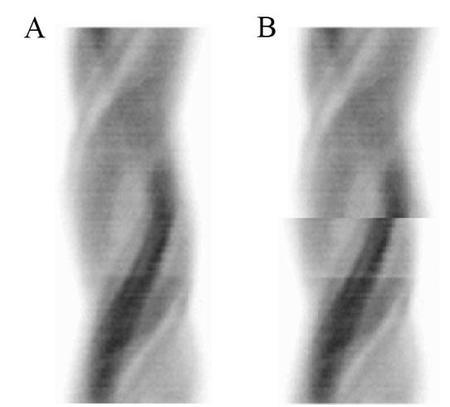
ALaterally decentered grid(4%)
BMotion(79%)
CNonlinearity(5%)
DCenter of rotation error(12%)
Your answerB
Correct answerB. Motion
Vital Concept
Motion artifacts appear prominently on sinograms because they represent projection data inconsistencies—the heart's position changes between angles, breaking the expected smooth sinusoidal pattern that stationary objects create across SPECT projections.
Explanation
Motion
Sinograms are an important part of quality control when evaluating nuclear medicine images and should be reviewed for artifacts to accurately interpret the images.
In SPECT acquisition, one would expect a smooth sinogram without interruptions (sinogram A). One of the most common errors is patient motion, which shows offset of the sinogram at the level of motion as seen in sinogram B.
Incorrect Answers:
A. Laterally decentered grid results in exposure of only a small portion of a film and is not something evaluated on a sinogram.
C. Linearity is a weekly measure of spatial resolution for gamma camera to ensure that lines depicted with a four-quadrant bar phantom demonstrate <1 mm of non-linearity. This feature is generally not evaluated on sinogram.
D. Center of rotation means the calibration between the frame of reference used by the computer's reconstruction algorithms and the mechanical axis of rotation of a (SPECT) camera. COR errors usually result in cold defects and image blurring. At the extreme, they can result in a "doughnut" artifact. These can often be very difficult to appreciate in clinical images but are easily seen on point-source phantoms. The given sinograms show a normal sinogram A and patient motion in sinogram B.
Vital Concept: Motion artifacts appear prominently on sinograms because they represent projection data inconsistencies—the heart's position changes between angles, breaking the expected smooth sinusoidal pattern that stationary objects create across SPECT projections.
Q20
moderate QID 24487
Correct
Which of the following constitutes a minor radionuclide spill?
A1 mCi I-131(5%)
B10 mCi In-111(2%)
C10 mCi Ga-67(2%)
D100 mCi Tl-201(2%)
E10 mCi Tc-99m(89%)
Your answerE
Correct answerE. 10 mCi Tc-99m
Vital Concept
Minor spill thresholds vary by radiopharmaceutical radiotoxicity - Tc-99m and Tl-201 allow up to 100 mCi, In-111 and Ga-67 allow up to 10 mCi, while I-131 allows only up to 1 mCi before requiring major spill response protocols.
Explanation
10 mCi Tc-99m
Minor spill thresholds for common nuclear medicine radiopharmaceuticals vary significantly based on radiotoxicity and handling considerations. Technetium-99m and Thallium-201 have the highest minor spill thresholds at less than 100 mCi, reflecting their relatively lower radiotoxicity and shorter half-lives that make containment more manageable. Indium-111 and Gallium-67 have intermediate thresholds at less than 10 mCi, requiring more cautious handling due to their longer half-lives and higher energy emissions. Iodine-131 has the most stringent threshold at less than 1 mCi, reflecting its significant radiotoxicity, tendency for thyroid uptake, and potential for airborne contamination. These thresholds determine response protocols - minor spills can be handled by trained personnel using standard contamination control procedures, while major spills require area evacuation, immediate notification of the Radiation Safety Officer, and specialized cleanup protocols. The distinction ensures appropriate resource allocation and safety measures proportional to the actual radiological hazard presented.
Incorrect Answers:
A. 131-Iodine < 1 mCi
B. 111-Indium < 10 mCi
C. 67-Galium < 10 mCi
D. 201-Thallium < 100 mCi.
Vital Concept: Minor spill thresholds vary by radiopharmaceutical radiotoxicity - Tc-99m and Tl-201 allow up to 100 mCi, In-111 and Ga-67 allow up to 10 mCi, while I-131 allows only up to 1 mCi before requiring major spill response protocols.
Q21
easy QID 24466
Correct
Which of the following locations are considered restricted areas in the nuclear medicine department?
AThe reading room(0%)
BThe hot lab(5%)
CThe patient waiting room(0%)
DThe patient imaging room(1%)
EB and D(94%)
Your answerE
Correct answerE. B and D
Vital Concept
Nuclear medicine labs are divided into restricted and unrestricted areas based on the background dose limit for members of the general public set by the Nuclear Regulatory Commission of 2 mrem/hr. and less than 100 mrem over a total of 7 consecutive days. Any area where this dose limit is exceeded is considered a restricted area, with limited access.
Explanation
B and D
Hot labs and patient imaging rooms are classified as restricted areas because they exceed the dose rate threshold of 5 mrem per hour at 30 cm from radiation sources - hot labs due to radiopharmaceutical preparation, storage, and handling of unsealed radioactive materials, and imaging rooms due to patients with administered radioactivity combined with imaging equipment. Restricted areas are defined by specific dose rate limits: radiation areas (>5 mrem/hour at 30 cm), high radiation areas (up to 100 mrem/hour at 30 cm), and very high radiation areas (>500 rad/hour at 1 meter), plus any location where licensed radioactive material is used or stored. Unrestricted areas like reception areas, waiting rooms, office spaces, and reading rooms must maintain dose rates below 2 mrem per hour or 100 mrem per year, excluding contributions from patients with administered radioactivity. The fundamental determinant is whether radiation dose rates exceed specified thresholds for public exposure limits.
Incorrect Answers:
A., C. The patient waiting room and the radiologist reading room are not restricted areas as there is minimal if any, increased exposure to background radiation.
Vital Concept: Nuclear medicine labs are divided into restricted and unrestricted areas based on the background dose limit for members of the general public set by the Nuclear Regulatory Commission of 2 mrem/hr. and less than 100 mrem over a total of 7 consecutive days. Any area where this dose limit is exceeded is considered a restricted area, with limited access.
Q22
moderate QID 21605
Correct
A 23-year-old male patient with a history of intravenous drug misuse presents with the imaging shown. Which of the following is the most likely etiology?
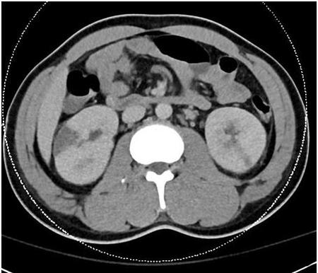
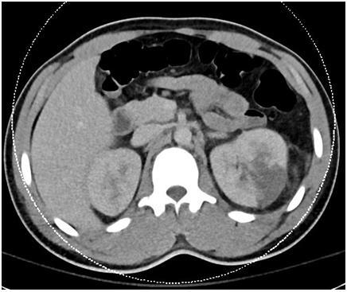
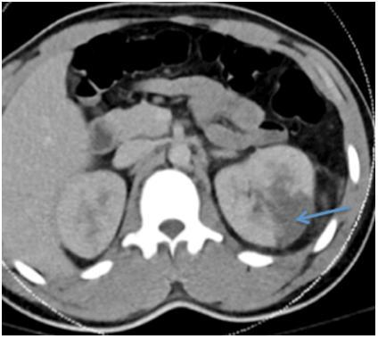
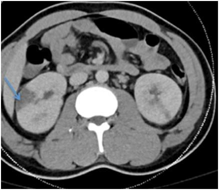
AAtherosclerotic renal artery stenosis(0%)
BFibromuscular dysplasia(0%)
CAortic atheroemboli(10%)
DMitral vegetations(85%)
EPyelonephritis(4%)
Your answerD
Correct answerD. Mitral vegetations
Vital Concept
Intravenous drug misuse increases the risk of infective endocarditis. Patients with valvular endocarditis are at significant risk for the development of renal infarction.
Explanation
Mitral vegetations
In the setting of intravenous drug misuse, the patient is at significant risk for the development of infective endocarditis due to non-sterile injection technique. The tricuspid valve is most frequently involved followed by the mitral and then the aortic valve. Frequently these patients develop valvular vegetations on the mitral valve leaflets. Patients with valvular endocarditis are at significant risk for the development of renal infarction. In this case, the peripheral wedge-shaped areas of hypoattenuation (blue arrows) are most in keeping with renal infarcts. Another interesting finding is the presence of the cortical rim sign, in which the peripheral rim of the kidney maintains perfusion due to its separate blood supply.
Incorrect Answers:
A. Atherosclerotic renal artery stenosis is a potential cause of renal infarcts due to distal atheroembolism. However, in such a young patient, atherosclerotic renal artery stenosis would be extremely unlikely, and another more likely potential etiology is given.
B. Fibromuscular dysplasia is a common cause of symptomatic renal artery stenosis in young, otherwise healthy patients. However, associated renal infarction is rare, and another more likely etiology is given.
C. Aortic atheroemboli may produce renal infarcts, especially in older patients with significant aortic atherosclerotic disease burden.
E. Pyelonephritis may mimic renal infarcts, but in this case, the cortical rim sign favors renal infarction. Additionally, the given history strongly suggests embolic etiology.
Vital Concept: Intravenous drug misuse increases the risk of infective endocarditis. Patients with valvular endocarditis are at significant risk for the development of renal infarction.
Q23
easy QID 12309
Correct
What is the artifact seen on this axial MRI image?
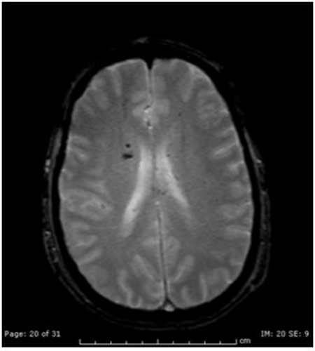
ASusceptibility(99%)
BTruncation(0%)
CAliasing(0%)
DMotion(0%)
Your answerA
Correct answerA. Susceptibility
Explanation
Susceptibility
Susceptibility artifact occurs secondary to local magnetic field inhomogeneities with paramagnetic, super-paramagnetic, ferromagnetic, or diamagnetic properties. Common examples are loss of signal in tissue next to metallic orthopedic hardware and susceptibility changes on the GRE sequences in cases of brain bleeds. Using fast spin-echo sequences instead of GRE sequences will decrease the susceptibility artifact.
Incorrect Answers:
B. Truncation, or Gibbs artifact, refers to a series of lines in the MRI image parallel and adjacent to abrupt and intense changes in the signal intensity. Examples include CSF-spinal cord interface and skull-brain interface. Using a larger matrix and the use of smoothing filters can be effective to fix this artifact.
C. Aliasing or wrap-around is a common MRI artifact that occurs in the phase-encoding direction when the FOV is too small and the parts of the body outside of the field of view wrap around and get projected over the other side of the FOV. This can be corrected by using a larger FOV, switching the direction of the phase and frequency gradients, using pre-saturation bands on areas outside the FOV, using over-sampling of the areas outside the field of view, or using anti-aliasing software.
D. Motion, or ghosting, is secondary to the patient motion or pulsating structures.
Vital Concepts:
The punctate hypointense foci represent susceptibility artifact on T2*-weighted GRE sequences. Paramagnetic substances in the basal ganglia (calcification, iron deposits, or hemosiderin) create local magnetic field inhomogeneity, causing accelerated signal decay and appearing as areas of signal loss with associated blooming effects.
Q24
moderate QID 23372
Correct
Which of the following type of injury is shown here?
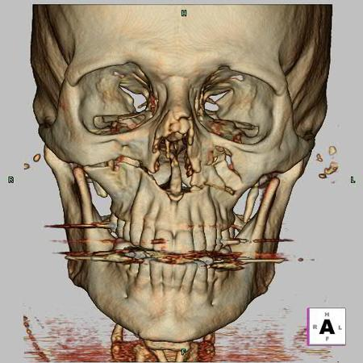
ALe Fort type I(77%)
BLe Fort type II(14%)
CLe Fort type III(5%)
DCombined Le Fort type II and III(4%)
Your answerA
Correct answerA. Le Fort type I
Vital Concept
LeForte type I ("floating palate") is a horizontal fracture separating the hard palate from the face and skull base. The fracture extends through the maxillary walls, piriform aperture, nasal septum, and pterygoid plates. Best visualized on coronal and three-dimensional CT images.
Explanation
Le Fort type I
Volume-rendered reconstruction of skull CT demonstrated a transversely oriented fracture through the maxilla. The floor of the orbits and the bridge of the nasal bone are intact. These findings are seen only in a Le Fort type I fracture. The Le Fort classification is a method of classifying facial fractures, named after the French physician Rene Le Fort.
Le Fort type I fractures are horizontal maxillary fractures traversing the anterolateral margins of the nasal fossa, the inferior maxillary sinuses, and the pterygoid plates of the sphenoids. This results in a “floating palate.”
Incorrect Answers:
B. Le Fort II are pyramidal type fractures with the fracture line extending through the posterior alveolar ridge, lateral wall of the maxillary sinus, inferior and medial orbital rim, and across the nasal bones. This results in a “floating maxilla.”
C. Le Fort type III fractures are transversely oriented fractures extending through the nasofrontal suture, maxillofrontal suture, orbital wall, and zygomatic arch. Le Fort III fractures are commonly referred to as “craniofacial disjunction,” or a “floating face.”
A method to simplify the classification of Le Fort fractures has been proposed by Rhea and Novelline, based on a single component unique to each fracture. First, evaluate the following four structures for fracture:
1. Pterygoid process = Fracture present in all, confirms Le Fort type fracture.
2. Lateral margin of nasal fossa = Unique to Le Fort I.
3. Inferior orbital rim = Unique to Le Fort II.
4. Zygomatic arch = Unique to Le Fort III.
Vital Concept: LeForte type I ("floating palate") is a horizontal fracture separating the hard palate from the face and skull base. The fracture extends through the maxillary walls, piriform aperture, nasal septum, and pterygoid plates. Best visualized on coronal and three-dimensional CT images.
Q25
easy QID 20772
Correct
Which of the images below correctly demonstrates calcifications in a distribution which is considered most suspicious, according to the BI-RADS atlas?
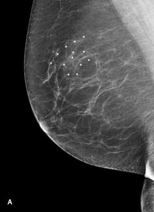
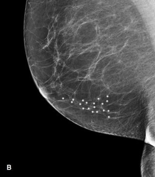
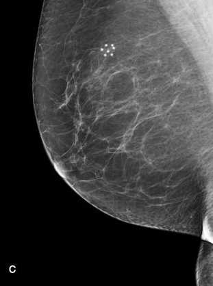
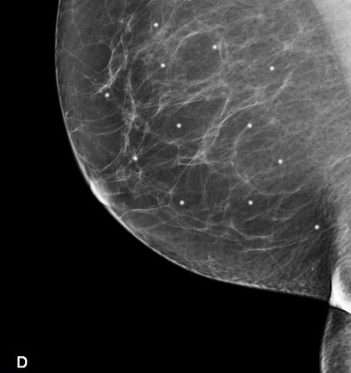
AA(3%)
BB(90%)
CC(7%)
DD(0%)
Your answerB
Correct answerB. B
Explanation
B
This is a segmental distribution in which calcifications are in ducts and branches of a segment or lobe. This would be suspicious for a malignant etiology. Sometimes the differentiation between regional and segmental can be made, but in many cases, the differentiation between regional and segmental is problematic because it is not clear on a mammogram or MRI where exactly the boundaries of a segment are.
Incorrect Answers:
A. This shows regional distribution, which is defined as scattered calcifications in a larger volume (> 2 mL) of breast tissue and not in the expected ductal distribution. This would favor a non-ductal benign etiology.
C. This is a grouped distribution in which at least five calcifications within 1 cm occupy a small volume of tissue. Grouped calcifications can be seen in both benign and malignant diseases. However, segmental calcifications would be more concerning. When groups are scattered throughout the breast, this favors a benign entity. A single group of calcifications favors a malignant entity.
D. This is diffuse or scattered calcifications. Diffuse calcifications may be scattered calcifications or multiple similar-appearing groups of calcifications throughout the whole breast. Diffuse or scattered distribution is typically seen in benign entities. Even when groups of calcifications are scattered throughout the breast, this favors a benign entity.
Q26
hard QID 4982
Incorrect
An 11-year-old male presents with elbow pain. The following radiographs were obtained. Which of the following is the appropriate diagnosis?
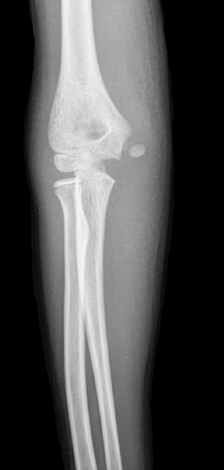
ALateral condyle fracture(14%)
BMedial condyle fracture(18%)
CRadial head fracture(1%)
DMedial epicondyle fracture(63%)
EOlecranon fracture(4%)
Your answerB
Correct answerD. Medial epicondyle fracture
Vital Concept
Medial epicondylar avulsion fractures are the most common avulsion injury of the elbow and are typically seen in children and adolescents. Medial epicondyle fractures are often associated with elbow dislocation and make up approximately 12% to 20% of all pediatric elbow fractures.
Explanation
Medial epicondyle fracture
Medial epicondyle avulsion fractures result from acute high-force valgus stress during throwing, causing displacement of the medial epicondyle ossification center that normally appears at 5 to 6 years per the CRITOE sequence. Unlike gradual-onset apophysitis from overuse, avulsion presents with sudden severe pain and obvious displacement on radiograph, as seen here. Comparison with the contralateral elbow helps confirm abnormal absence of the ossification center in equivocal cases.
Concurrent UCL injury should be evaluated. The weaker pediatric growth plates fail before ligaments, making this injury pattern more common in children than adults.
Incorrect Answers:
A. B.C.E. No abnormality in these anatomic structures.
Vital Concept: Medial epicondylar avulsion fractures are the most common avulsion injury of the elbow and are typically seen in children and adolescents. Medial epicondyle fractures are often associated with elbow dislocation and make up approximately 12% to 20% of all pediatric elbow fractures.
Q27
moderate QID 38124
Correct
A 4-year-old patient with a history of left-sided vesicoureteral reflux undergoes renal scintigraphy to assess for cortical scarring. Which of the following is the most likely radiopharmaceutical used?
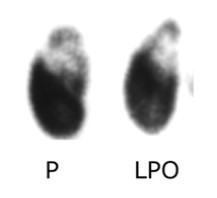
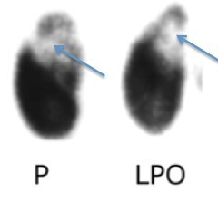
ATc99m – DTPA(6%)
BTc99m – DMSA(83%)
CTc99m – MDP(1%)
DTc99m – MAG3(10%)
EI131- OIH(0%)
Your answerB
Correct answerB. Tc99m – DMSA
Explanation
Tc99m – DMSA
The images shown are from a Tc99m – DMSA (dimercaptosuccinic acid) study. They show decreased tracer uptake in the superior pole of the left kidney (blue arrows). DMSA demonstrates stable cortical uptake, which produces high-quality images using either pinhole imaging or SPECT. Renal cortical imaging evaluates viability, infection, and structural abnormalities difficult to assess by ultrasound and CT.
Incorrect Answers:
A. Tc-99m DTPA (diethylenetriamine pentaacetic acid) is essentially completely filtered at the glomerulus with no tubular secretion or reabsorption. The first-pass extraction of this glomerular filtration agent is less than agents cleared by tubular secretion. As such, its use is reserved for glomerular filtration rate calculations.
C. MDP (medronic acid) is a bisphosphonate analogue and is used in bone scintigraphy, not renal imaging.
D. MAG-3 (mercaptoacetyltriglycin) is the most commonly used renal radiopharmaceutical. It is cleared almost entirely by tubular secretion. The extraction efficiency is considerably higher than filtration agents. This results in better performance when function is compromised. It is used for almost all blood flow and routine functional assessments.
E. OIH (hippuran) is cleared by tubular secretion and by glomerular filtration. It has high first-pass extraction. Therefore, hippuran is used to accurately measure ERPF.
Q28
hard QID 47096
Correct
Which of the following is the most common cause of the abnormality depicted in portal vein doppler?
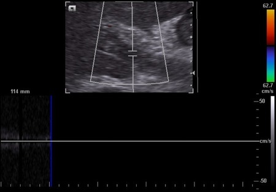
ADehydration(5%)
BCirrhosis(69%)
CMalignancy(17%)
DAntiphospholipid antibody syndrome(3%)
EPancreatitis(7%)
Your answerB
Correct answerB. Cirrhosis
Vital Concept
Cirrhosis is the most common cause of portal vein thrombosis. Ultrasound shows hyperechoic luminal content in an expanded portal vein with absent color flow on Doppler imaging.
Explanation
Cirrhosis
The color Doppler image shows an echogenic clot occluding the portal vein. Note the absence of flow and also the absence of cavernous transformation/collaterals, indicating that this is a relatively acute process.
Portal vein thrombosis occurs in a variety of clinical contexts, and when acute, can be a life-threatening condition. It may be either bland or malignant. The clinical presentation is often vague and nonspecific. If extensive acute thrombosis is present, and especially if the superior mesenteric venous system is also involved, then presentation is more likely to be that of an acute abdomen secondary to ischemic bowel.
Portal vein thrombosis, like thrombosis elsewhere, can occur due to the disturbance of any one of Virchow's triads. Reduced flow in the setting of cirrhosis and hepatic fibrosis is by far the most common cause.
Incorrect Answers:
C. Hepatobiliary malignancies may also lead to decreased flow, stasis, and thrombus formation.
D. Malignancies also create a hypercoagulable state, as do prothrombotic conditions.
E. Lastly, vascular injury, as may occur in pancreatitis, may also lead to this condition.
Vital Concept: Cirrhosis is the most common cause of portal vein thrombosis. Ultrasound shows hyperechoic luminal content in an expanded portal vein with absent color flow on Doppler imaging.
Q29
moderate QID 3071
Correct
This male patient complained of pain in the penis and recent onset in difficulty passing urine. Sonography of the penis was done; a single transverse view is shown. Which diagnosis is correct?
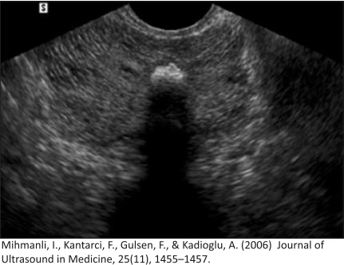
APenile urethral calculus(87%)
BPeyronie's disease(13%)
CPenile trauma(0%)
DPenile hematoma(0%)
ENormal study(0%)
Your answerA
Correct answerA. Penile urethral calculus
Explanation
Penile urethral calculus
An echogenic structure is seen in the expected location of the penile urethra. This patient complained of difficulty in passing urine due to the penile urethral calculus. The location of the calculus clearly differentiates it from calcification due to Peyronie's disease, where the echogenic lesion would lie within the more laterally oriented corpora cavernosa.
Incorrect Answers:
B. See the explanation above.
C. There is no evidence of penile hematoma or fracture.
D. No evidence of penile haematoma is present.
E. This is not a normal study.
Q30
moderate QID 56014
Incorrect
A sagittal short tau inversion recovery (STIR) sequence from a magnetic resonance image (MRI) of the elbow is shown below. Which of the following statements most correctly describes the finding shown?
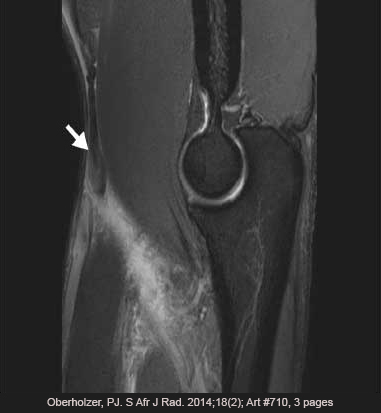
AA mechanism of injury involves passive elbow extension.(10%)
BThe degree of tendon retraction is clinically unimportant.(2%)
CThe torn tendon normally inserts on the radius.(80%)
DCommonly associated injury includes tear of the triceps tendon.(8%)
Your answerD
Correct answerC. The torn tendon normally inserts on the radius.
Vital Concept
Distal biceps tendon rupture affects middle-aged men with MRI showing tendon discontinuity and retraction.
Explanation
The torn tendon normally inserts on the radius.
This is a case of biceps tendon rupture at the elbow. The biceps normally inserts on the radial tuberosity.
Distal biceps rupture is from the excessive eccentric force as the arm is brought into extension from flexion. These activities include weightlifting, wrestling, and labor-intensive jobs. Proximal biceps rupture is generally not due to a unique mechanism of injury but highly correlated with rotator cuff disease.
Risk factors include age, smoking, obesity, use of corticosteroids, and overuse. Rare causes include the use of quinolones, diabetes, lupus, and chronic kidney disease.
Incorrect Answers:
A. Traumatic biceps tendon avulsions can be caused by passive or forced elbow flexion against resistance, not extension. Another cause are curls or rowing motions in weightlifting.
B. Assessing the degree of retraction is often the primary reason for obtaining a magnetic resonance image (MRI) and determines the surgical approach.
D. The biceps and triceps tendons function in opposition at the elbow, resulting in elbow flexion and elbow extension, respectively. Therefore, it would be unusual for both tendons to tear in the same setting. In fact, biceps tendon avulsions from the radial tuberosity are frequently isolated injuries.
Vital Concept: Distal biceps tendon rupture affects middle-aged men with MRI showing tendon discontinuity and retraction.
Q31
QID 56274
Correct
Which of the following factors is associated with an increased risk of complications and poor outcomes?
ALow volume of extravasation(0%)
BExtravasation over a large, anatomically unconfined region of an extremity(5%)
Correct answerC. Poor lymphatic or venous drainage
Vital Concept
Intravenous contrast extravasation risk factors include peripheral access sites, indwelling lines over 24 hours, compromised venous or lymphatic drainage, and arterial insufficiency. Most extravasations (98%) resolve without sequelae. Compartment syndrome occurs in less than 1% requiring surgical consultation for progressive pain, decreased mobility, skin breakdown, or altered perfusion.
Explanation
Poor lymphatic or venous drainage
Factors associated with increased risk of complication and poor outcome following iodinated contrast extravasation include poor venous or lymphatic drainage. Other risk factors include poor arterial supply and multiple venous punctures.
Incorrect Answers:
A. Factors associated with increased risk of complication and poor outcome following iodinated contrast extravasation include large, not small, volume of extravasation.
B. Factors associated with increased risk of complication and poor outcome following iodinated contrast extravasation include extravasation into an anatomically confined, not unconfined, region.
D. Extravasation can be either in intra-compartmental (at risk for the development of compartment syndrome, not skin changes, as they are deeper, not superficial) or extra-compartmental (at risk for skin necrosis and ulceration, not compartment syndrome). The image presented is an example of large volume, extra-compartmental extravasation. Therefore, skin changes are not associated with intra-compartment extravasation.
Vital Concept: Intravenous contrast extravasation risk factors include peripheral access sites, indwelling lines over 24 hours, compromised venous or lymphatic drainage, and arterial insufficiency. Most extravasations (98%) resolve without sequelae. Compartment syndrome occurs in less than 1% requiring surgical consultation for progressive pain, decreased mobility, skin breakdown, or altered perfusion.
Q32
moderate QID 43908
Correct
What is the most likely diagnosis in this 36-year-old female with lower back pain and radicular symptoms?
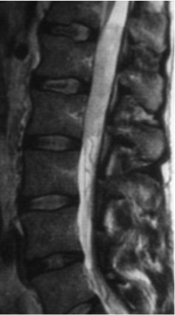
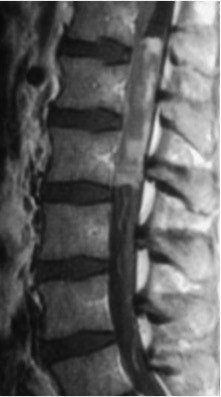
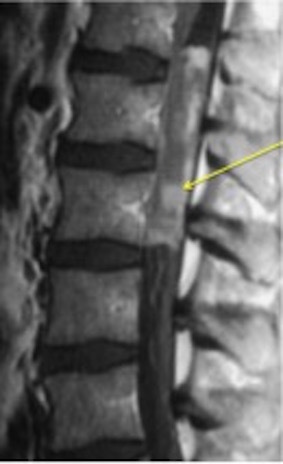
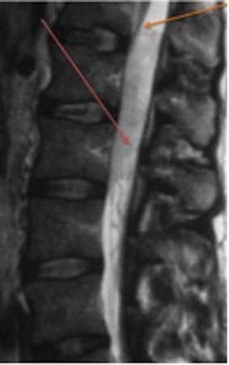
AAstrocytoma(4%)
BHemangioblastoma(7%)
CAbscess(1%)
DMyxopapillary ependymoma(79%)
Your answerD
Correct answerD. Myxopapillary ependymoma
Explanation
Myxopapillary ependymoma
The sagittal T2 image shows a large hyperintense mass (red arrow) centered at the conus (orange arrow), which on the T1 post-contrast image shows heterogeneous enhancement (yellow arrow). The most common tumor of the conus medullaris and filum terminale is a myxopapillary ependymoma.
Spinal myxopapillary ependymomas are a variant type of spinal ependymoma that occur exclusively in the conus medullaris and filum terminale. They represent 13% of all spinal ependymomas and are by far the most common tumors in this location. They tend to have an earlier clinical presentation than other spinal ependymomas, with a mean age of presentation of 35 years, and a slight male predominance.
Incorrect Answers:
A. Astrocytoma is the most common spinal cord tumor in children. It is an intramedullary mass which appears ill-defined and eccentrically located. Hemorrhage is uncommon and patchy irregular contrast enhancement is most often present. They are most frequently seen in the thoracic, followed by the cervical cord.
B. Hemangioblastoma is a less common spinal neoplasm. Their most common location is the thoracic cord (50%). The majority of hemangioblastomas have an eccentric intramedullary component as well as an exophytic component. Only 25% percent are entirely intramedullary.
C. The clinical presentation in this case is not that of infection. Intradural abscesses are seen most often following instrumentation/ surgery. Although they can have almost any appearance, like those elsewhere in the body, classical features such as rim enhancement, restricted diffusion, and adjacent vertebral or disc abnormalities are commonly encountered.
Q33
easy QID 22574
Correct
A 10-month-old female patient presents with seizures. Which of the following is the diagnosis?
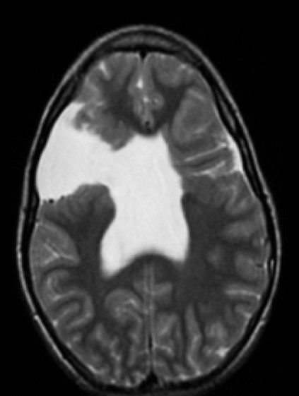
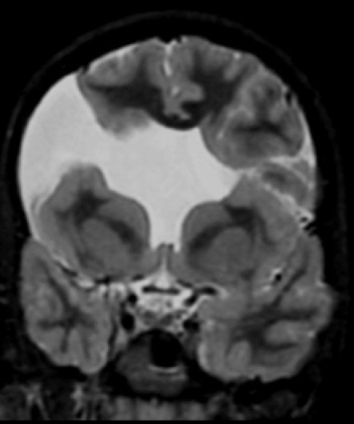
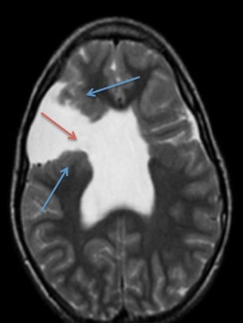
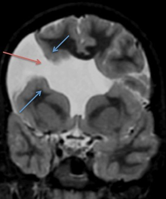
ASchizencephaly(96%)
BPorencephaly(3%)
CPolymicrogyria(0%)
DPachygyria(0%)
EHoloprosencephaly(1%)
Your answerA
Correct answerA. Schizencephaly
Vital Concept
Schizencephaly appears as a CSF-filled cleft extending from subarachnoid space to lateral ventricle lined with gray matter. Gray matter lining distinguishes it from porencephaly.
Explanation
Schizencephaly
Schizencephaly is characterized by gray matter (blue arrows) lined clefts (red arrows) extending through the brain parenchyma, communicating with the ventricular system. They are acquired in utero and may be the result of infection, vascular injury, toxin exposure, or trauma. Most frequently they are found in the frontal and/or parietal lobes and may be bilateral. They may be characterized as “open lip” or “closed lip” based on the width of the cleft. Frequently they are associated with cortical dysplasias in the region of the abnormality, such as pachygyria, polymicrogyria, or gray matter heterotopias.
Incorrect Answers:
B. Porencephaly is characterized by the presence of a CSF-filled cavity or cleft typically extending to the ventricle, lined by gliotic tissue. The absence of grey matter cortical material typically distinguishes porencephalic cysts from schizencephaly. It is typically the result of in utero cerebrovascular events or infection.
C. Polymicrogyria is a cortical dysplasia consisting of abnormal distribution of neuronal tissue that produces an abnormally high number of small, shallow sulci. It may be confused with pachygyria because the high number of small gyri and sulci may appear fused on lower-resolution sequences, giving the illusion of abnormally thick, broad gyri. It may be associated with areas of schizencephaly. It is frequently associated with intrauterine infection.
D. Pachygyria is characterized by abnormally thickened, smooth cortex with broad, flattened gyri. It frequently appears in conjunction with polymicrogyria (pachygyria-polymicrogyria).
E. Holoprosencephaly is the diagnosis when the finding is a single midline ventricle. It is due to failure of hemispheric cleavage and may be associated with other findings including facial defects such as hypotelorism and midface hypoplasia as well as cyclopia, presence of a proboscis, single maxillary central incisor, among other midline facial defects. The cerebral falx is absent, and there is frequently an azygous anterior cerebral artery. Patients are typically markedly as cognitively impaired. There are varying degrees of holoprosencephaly. Alobar holoprosencephaly is the most severe, with no separation of hemispheres and a single central ventricle. Semilobar type has separation of the temporal lobes. Lobar types typically have a single frontal lobe with separation of the posterior brain structures and presence of the splenium of the corpus callosum.
Vital Concept: Schizencephaly appears as a CSF-filled cleft extending from subarachnoid space to lateral ventricle lined with gray matter. Gray matter lining distinguishes it from porencephaly.
Q34
moderate QID 21560
Correct
A 59-year-old male has undergone cardiac bypass grafting. Which of the following is indicated by the arrows?
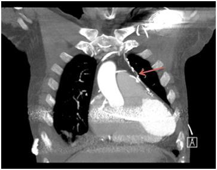
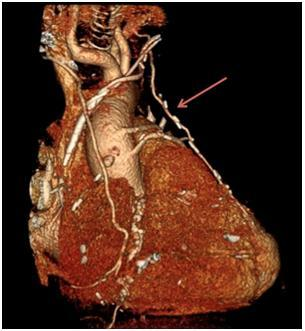
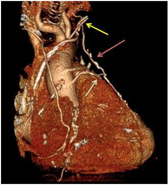
ASaphenous vein graft to left anterior descending artery(2%)
BLeft internal mammary artery (LIMA) to left anterior descending (LAD) graft(88%)
CLeft internal mammary artery (LIMA) to left coronary artery (LCA) graft(4%)
DLeft internal mammary artery (LIMA) to obtuse marginal artery graft(6%)
ELeft internal mammary artery (LIMA) to acute marginal artery graft(1%)
Your answerB
Correct answerB. Left internal mammary artery (LIMA) to left anterior descending (LAD) graft
Explanation
Left internal mammary artery (LIMA) to left anterior descending (LAD) graft
When evaluating cardiac CT angiography, it is important to be familiar with coronary artery anatomy and the appearance of common bypass grafts. One commonly performed bypass graft is the LIMA (seen as the long segment artery on the coronal MIP and 3D images – red arrows) to the LAD (green arrow). On CT imaging, LIMA grafts are distinguished by their origin at the left subclavian (yellow arrow), and they commonly extend to the distal LAD for the purpose of bypassing a proximal LAD stenosis. They have increased in popularity due to their increased patency rates compared to saphenous grafts.
Incorrect Answers:
A. Saphenous vein grafts are performed by harvesting a length of saphenous vein from the lower extremity and grafting to the proximal ascending aorta with distal anastomosis to the bypassed vessel. They are very common but have lower patency rates than those seen with LIMA grafts.
C. In this case, the LIMA graft extends to the distal LAD, which normally courses in the interventricular groove along the anterior wall of the left ventricle.
D. The obtuse marginal artery is a branch of the left circumflex artery extending along the left margin of the heart toward the apex. The graft is distally anastomosed to the distal LAD.
E. The acute marginal artery is a branch of the right coronary artery extending along the surface of the right ventricle. The graft is distally anastomosed to the LAD.
Q35
hard QID 24102
Correct
How should the density of these breasts be reported on this screening mammogram?
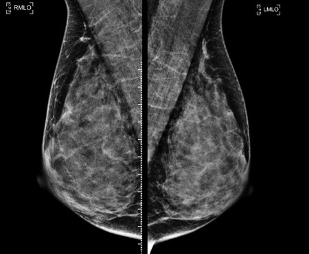
ABreast density remains stable throughout life.(0%)
BThe breast is almost entirely fatty.(1%)
CFocused ultrasound is the best next step.(25%)
DSmall masses may be obscured.(74%)
Your answerD
Correct answerD. Small masses may be obscured.
Vital Concept
Breast density refers to the amount of fibroglandular tissue in a breast relative to fat. It can significantly vary between individuals and within individuals over a lifetime. Increased breast density lowers the sensitivity of mammography and should be reported by the radiologist.
Explanation
Small masses may be obscured.
Breast density may lower the sensitivity of the examination. The BI-RADS manual states that an overall assessment of the volume of attenuating tissues in the breast should be reported to help indicate the relative possibility that a lesion could be hidden by normal tissue. Breast composition should be described for all patients using one of the following categories:
• The breast is almost entirely fat.
• There are scattered fibroglandular densities.
• The breast tissue is heterogeneously dense, which could obscure detection of small masses.
• The breast tissue is extremely dense. This may lower the sensitivity of mammography.
At first glance, this image appears to be either heterogeneous or extremely dense, as there is overall less fat than glandular tissue, and the glandular tissue is confluent (not scattered); answers A and B can therefore be eliminated. There is generally significant controversy/interobserver variability between the heterogeneously and extremely dense categories. Comparing the following two images in the BI-RADS Mammography Reporting System (see link in References; pages 130 and 132) can guide categorization; the heterogeneously dense image (page 130) shows fat intermixed with the glandular tissue, which can also be seen in the image in the question stem. In contrast, the extremely dense example (page 132) has considerably less mixed with the glandular tissue, and the glandular tissue itself is significantly denser than the glandular tissue in the provided images.
Vital Concept: Breast density refers to the amount of fibroglandular tissue in a breast relative to fat. It can significantly vary between individuals and within individuals over a lifetime. Increased breast density lowers the sensitivity of mammography and should be reported by the radiologist.
Q36
easy QID 21590
Correct
A 30-year-old female patient presents with medical treatment-resistant hypertension. Which of the following is the most appropriate next step?
AAngioplasty and self-expanding stent(2%)
BAngioplasty and balloon-expandable stent(4%)
CAngioplasty alone(93%)
DAngioplasty and drug-eluting stent(1%)
ESurgical bypass(0%)
Your answerC
Correct answerC. Angioplasty alone
Vital Concept
Percutaneous angioplasty is first-line for patients with symptomatic renal FMD resistant to medical therapy. Stents are reserved for dissection or angioplasty failure.
Explanation
Angioplasty alone
In this case, the coronal CTA images shows a “beaded” appearance of the renal arteries bilaterally (red arrows). This is consistent with fibromuscular dysplasia (FMD). There are multiple types of FMD that affect differing histologic layers of the vascular wall, but the most common type is medial fibroplasia, affecting the tunica media and producing the string of beads appearance. In this patient with medical treatment-resistant hypertension, angioplasty without stenting is the most appropriate next step of those given. Stenting would be appropriate in the setting of dissection or atherosclerosis complicating FMD. Surgical bypass would be a last-line therapy in continued treatment resistance or in the setting of occlusive renal artery dissection that cannot be resolved by stenting.
Incorrect Answers:
A, B, D, and E. These all are reserved for disease resistant to angioplasty, as described above.
Vital Concept: Percutaneous angioplasty is first-line for patients with symptomatic renal FMD resistant to medical therapy. Stents are reserved for dissection or angioplasty failure.
Q37
moderate QID 43894
Correct
A 8-year-old male patient sustained an ankle injury. Which of the following is the appropriate Salter-Harris classification?
AI(1%)
BII(88%)
CIII(6%)
DIV(5%)
EV(0%)
Your answerB
Correct answerB. II
Explanation
II
The lateral ankle radiograph shows a fracture through the tibial growth plate (green arrow) with extension proximally to the metaphysis (blue arrow), making this a Salter-Harris II injury. Salter-Harris fractures are very common pediatric fractures involving the epiphyseal plate. They are important as they can result in premature closure of the growth plate with limb shortening and/or abnormal growth.
Incorrect Answers:
A. Type I: fracture plane passes through the growth plate and does not involve the bone. The prognosis is good.
B. Type II: fracture passes across most of the growth plate and proximally through the metaphysis. The prognosis is good.
C. Type III: fracture plane passes some distance along the growth plate and distally through the epiphysis. There is a poorer prognosis as the proliferative and reserve zones of the growth plate are interrupted.
D. Type IV: fracture plane passes directly through the metaphysis, growth plate, and epiphysis. The prognosis is poor.
E. Type V: crush type injury does not displace the growth plate but damages it by direct compression. The prognosis is the worst.
Q38
easy QID 20582
Correct
A 54-year-old female patient with a history of pericarditis presents with an incidental finding on imaging as seen below. This lesion is most commonly seen in which of the following locations?
ALeft cardiophrenic angle(7%)
BRight cardiophrenic angle(90%)
CLeft upper lobe of lung(0%)
DRight lower lobe of lung(1%)
ENeck(1%)
Your answerB
Correct answerB. Right cardiophrenic angle
Vital Concept
Pericardial cysts are uncommon benign congenital anomalies of the anterior and middle mediastinum. Surgical resection or aspiration may be performed in selected cases for patients who are symptomatic.
Explanation
Right cardiophrenic angle
Incorrect Answers:
A. Pericardial cysts occur 22% of the time on the L cardiophrenic angle.
C. D. E. Approximately 70% of pericardial cysts are located at the R cardiophrenic angle, 22% on the L and the remaining cysts are located at other locations adjacent to the heart in the anterior or posterior mediastinum.
Vital Concept: Pericardial cysts are uncommon benign congenital anomalies of the anterior and middle mediastinum. Surgical resection or aspiration may be performed in selected cases for patients who are symptomatic.
Q39
hard QID 12303
Correct
A 57-year-old obese female presents with acute right knee pain and swelling. Based on the images below, which of the following is the most likely diagnosis?
AOsteochondritis dissecans(23%)
BInsufficiency fracture(75%)
CGiant cell tumor (GCT)(0%)
DOsteomyelitis(1%)
Your answerB
Correct answerB. Insufficiency fracture
Vital Concept
Acute insufficiency fracture of the knee affects the weight-bearing portion of the medial femoral condyle in older females.
Explanation
Insufficiency fracture
Acute insufficiency fracture of the knee (previously known as SONK, spontaneous osteonecrosis of the knee) affects the weight-bearing portion of the medial femoral condyle in older females. This patient has a linear low attenuating subchondral fracture, best seen on the coronal T1 image (arrow) with associated bone marrow edema best seen on the T2 images. Patients typically experience acute-subacute pain, often when standing up.
Incorrect Answers:
A. Osteochondritis dissecans of the knee is the most common form of the disease and is due to aseptic separation of an osteochondral fragment. It tends to involve the non-weight-bearing lateral aspect of the medial femoral condyle (this patient has involvement of the weight-bearing portion of the medial condyle) in middle-aged males. Instability of the bone fragment is seen as hyperintense T2 signal undermining the bone fragment.
C. GCT involves the metaepiphysis of long bones and may extend to the articular surface. Peak age is between 20 and 30 years. On radiograph it usually presents as a lytic mass adjacent to the joint line with narrow zone of transition and in the vast majority of cases there is no sclerotic margin. A sclerotic margin can be seen rarely. On MRI it is usually low on T1 with enhancement, heterogeneous on T2 with surrounding bone edema. A GCT with a component of ABC can be seen; in this case the T2 will show fluid-fluid levels typical of ABC and enhancing solid component typical of GCT.
D. Osteomyelitis of the bone presents as an aggressive irregular bone lesion with enhancement, intraosseous and soft tissue abscesses.
Vital Concept: Acute insufficiency fracture of the knee affects the weight-bearing portion of the medial femoral condyle in older females.
Q40
QID 5008
Incorrect
A 1-year-old female who underwent a liver transplant presents with increasing liver function tests. A HIDA scan is ordered and shown below. Which of the following is the diagnosis?
AHepatitis(6%)
BBiliary leak(67%)
CCBD obstruction(10%)
DCBD stricture(18%)
Your answerA
Correct answerB. Biliary leak
Vital Concept
HIDA scintigraphy detects bile leaks by showing radiotracer extravasation outside the liver, biliary tree, or bowel. Bile leaks occur in up to 20% of liver transplants and are associated with decreased patient and graft survival, making prompt detection crucial for timely surgical or interventional management.
Explanation
Biliary leak
A collection of radiotracer forming near the inferior right lobe increases with time (red arrows), consistent with a biliary leak. Remember, cholecystectomy is performed at the time of liver transplantation, so this collection of radiotracer is abnormal (despite morphologically mimicking the gallbladder). Additionally, there is curvilinear radiotracer around the margin of the left hepatic lobe (white arrows) that is non-specific, possibly representing leaked radiotracer or refluxed radiotracer to the stomach.
Incorrect Answers:
A. There is prompt/normal hepatic uptake with radiotracer excretion into the biliary system. Hepatitis/ hepatocellular dysfunction would reveal slow uptake into the liver, with persistent cardiac and hepatic activity on further delayed imaging.
C. The radiotracer does not drain to the common bile duct and stop abruptly to suggest obstruction.
D. There is no narrowing or obstruction of radiotracer activity in the common bile duct; rather, a leak has resulted in extra-luminal radiotracer activity near the hepatic dome with partial drainage.
Vital Concept: HIDA scintigraphy detects bile leaks by showing radiotracer extravasation outside the liver, biliary tree, or bowel. Bile leaks occur in up to 20% of liver transplants and are associated with decreased patient and graft survival, making prompt detection crucial for timely surgical or interventional management.
Q41
moderate QID 21165
Incorrect
A 53-year-old male patient undergoes diagnostic adrenal vein sampling. Which of the following is indication for the procedure?
ADiagnosis of pheochromocytoma(17%)
BDiagnosis of adrenocortical carcinoma(3%)
CDiagnosis of adrenal metastasis(0%)
DLocalization of functional adrenal adenoma(79%)
ELocalization of extra-adrenal tissue prior to adrenalectomy(1%)
Your answerA
Correct answerD. Localization of functional adrenal adenoma
Explanation
Localization of functional adrenal adenoma
Adrenal vein sampling is a diagnostic vascular procedure in which the adrenal veins are sampled before and after the administration of an intravenous ACTH analogue. The goal of the procedure is to localize a functional adrenal adenoma when imaging studies are inconclusive as to the site of the lesion. This may be done when there is an imaging-occult functional adrenal lesion, and adrenalectomy is being considered. Or, as in this case, it may be done when there are bilateral adrenal lesions, and it is unclear which is the functional lesion, or if both are functional. Basal and peak venous concentrations of aldosterone and cortisol are compared between the adrenal veins and IVC in order to localize the adrenal gland containing the functional tissue.
Incorrect Answers:
A. Often, pheochromocytoma can be diagnosed by measuring 24-hour urine catecholamines.
B. Adrenocortical carcinoma can often be suggested on imaging studies. If there is diagnostic uncertainty, the lesion may be biopsied percutaneously before proceeding to adrenalectomy. Adrenal vein sampling would play little, if any, role in diagnosis of adrenocortical carcinoma.
C. Adrenal metastasis may be suggested on imaging studies and is of increased suspicion when there is a known primary lesion. In cases of diagnostic uncertainty, percutaneous biopsy can be performed.
E. Localization of extra-adrenal tissue prior to adrenalectomy could be performed with nuclear medicine studies such as MIBG, in the case of pheochromocytoma.
Q42
hard QID 24043
Incorrect
Which statement is true regarding the anatomy depicted in this aortogram?
AIt is often symptomatic.(5%)
BIt is often associated with congenital heart disease.(23%)
CIt represents a vascular ring.(60%)
DThere is no increased risk of aneurysm.(5%)
EIt is seen frequently in patients with connective tissue disorders.(7%)
Your answerB
Correct answerC. It represents a vascular ring.
Vital Concept
Right aortic arch with aberrant left subclavian artery features the left subclavian arising from Kommerell's diverticulum. Enlargement of Kommerell's diverticulum can compress the trachea and esophagus, causing dysphagia, dyspnea, and cough. This creates a complete vascular ring around the trachea and esophagus.
Explanation
It represents a vascular ring.
The aortogram demonstrates a right-sided aortic arch (pink arrow) with an aberrant left subclavian artery (blue arrow), which is considered a vascular ring. The left subclavian artery arises as the last branch off the arch, and passes posterior to the airway and esophagus, creating the posterior component of the ring. The arch forms the anterior component of the ring. This can lead to airway compression or dysphagia. However, these are seen in a minority of patients (~5-10%).
Incorrect Answers:
A. Most patients with this anatomy are asymptomatic.
B. Though a right-sided arch is seen in many congenital heart disease patients, the aberrant left subclavian variant is seen in less than 10%. A right-sided arch with mirror-image branching is the right arch variant seen most often in congenital heart disease patients. The majority have tetralogy of Fallot.
D. In a small percentage of cases, Kommerell diverticula can become aneurysmal; risk is therefore increased.
E. Patients with connective tissue disorders such as Marfan syndrome or Ehlers-Danlos syndrome have an increased risk of type A or ascending thoracic aortic aneurysm. There is no association with a right-sided aortic arch.
Vital Concept: Right aortic arch with aberrant left subclavian artery features the left subclavian arising from Kommerell's diverticulum. Enlargement of Kommerell's diverticulum can compress the trachea and esophagus, causing dysphagia, dyspnea, and cough. This creates a complete vascular ring around the trachea and esophagus.
Q43
easy QID 43800
Correct
Based on the pattern of injury seen in this 20-year-old college football player, what structure is most likely to be disrupted?
AMedial meniscus(1%)
BLateral meniscus(2%)
CAnterior cruciate ligament(90%)
DPosterior cruciate ligament(2%)
EMedial patellofemoral ligament(5%)
Your answerC
Correct answerC. Anterior cruciate ligament
Vital Concept
MRI will show a reciprocal marrow edema pattern described above with or without osteochondral injuries. The location of the lateral femoral condyle injury depends on the degree of flexion of the knee at the time of injury. More flexed positions during injury result in more posteriorly located bone contusions, while less flexed positions during injury result in more anteriorly located contusions.
Explanation
Anterior cruciate ligament
The anterior cruciate ligament is most likely to be torn. The sagittal fat-saturated T2 images show a reciprocal marrow edema pattern at the posterior aspect of the lateral tibial plateau (green arrow) and the anterior aspect of the lateral femoral condyle, known as femoral notch sign (orange arrow). Additionally, there is a large joint effusion (blue arrow). These are imaging findings of a recent pivot shift injury.
The injury occurs when there is rapid deceleration with simultaneous direction change, which loads the anterior cruciate ligament (ACL), sometimes to the point of rupture (red arrow – taken from a more midline location in the same patient). With rupture of the anterior cruciate ligament, there is anterior subluxation of the tibia relative to the femur, which causes impaction of the lateral femoral condyle against the posterolateral margin of the lateral tibial plateau.
Incorrect Answers:
A. B. Additional soft tissue injuries that may be present include tears of the posterior capsule and arcuate ligament, posterior horns of the lateral or medial menisci, and the medial collateral ligament.
D. The posterior cruciate ligament is typically injured by a direct blow on the anterior tibia with the knee flexed, thus driving the tibia posteriorly, as occurs in motor vehicle accidents (in which the knee hits the dashboard) and soccer injuries (in which an athlete receives a blow to the anterior surface of the tibia during knee flexion). Additional PCL injury mechanisms include hyperextension, hyperflexion, or rotational injuries with associated valgum/varum stress.
E. Medial patellofemoral ligament injury is more commonly seen in lateral patellar dislocation.
Vital Concept: MRI will show a reciprocal marrow edema pattern described above with or without osteochondral injuries. The location of the lateral femoral condyle injury depends on the degree of flexion of the knee at the time of injury. More flexed positions during injury result in more posteriorly located bone contusions, while less flexed positions during injury result in more anteriorly located contusions.
Q44
moderate QID 37617
Correct
Which of the following was one of the conclusions of the Biological Effects of Ionizing Radiation (BEIR) Committee of the National Academy of Sciences (BEIR VII Report)?
AThere is a quadratic, no-threshold dose-response relationship between exposure to ionizing radiation and the development of cancer in humans.(5%)
BThere is a linear, threshold dose-response relationship between exposure to ionizing radiation and the development of cancer in humans.(4%)
CThere is a linear, no-threshold dose-response relationship between exposure to ionizing radiation and the development of cancer in humans.(87%)
DApproximately 5 people in 100 would be expected to develop cancer (solid cancer or leukemia) from a dose of 100 mSv above background.(2%)
EApproximately 1 person in 100 would be expected to develop cancer (solid cancer or leukemia) from a dose of 1000 mSv above background.(2%)
Your answerC
Correct answerC. There is a linear, no-threshold dose-response relationship between exposure to ionizing radiation and the development of cancer in humans.
Vital Concept
The BEIR VII committee concluded that "the current scientific evidence is consistent with the hypothesis that there is a linear, no-threshold dose-response relationship between exposure to ionizing radiation and the development of cancer in humans." This would translate into a small increased risk of cancer from clinical CT doses.
Explanation
There is a linear, no-threshold dose-response relationship between exposure to ionizing radiation and the development of cancer in humans.
Dose relationship for radiation induced cancers
Increased awareness of the risks of medical radiation in modern imaging was raised in 2005 with a report from the Biological Effects of Ionizing Radiation (BEIR) Committee of the National Academy of Sciences (commonly known as the BEIR VII Report). The committee was primarily tasked “to develop the best possible risk estimate for human exposure to low-dose, low-LET (linear energy transfer) ionizing radiation.” The definition of “low dose” was 0-100 mSv, which encompasses the range of diagnostic imaging procedures.
A major focus was to assess the shape of the response curve to low-dose radiation, particularly among the linear no-threshold (LNT), linear-quadratic, and threshold models. The BEIR VII committee concluded that “the current scientific evidence is consistent with the hypothesis that there is a linear, no-threshold dose-response relationship between exposure to ionizing radiation and the development of cancer in humans.” This would translate into a small increased risk of cancer from clinical CT doses. Douple and Jostes noted: “On average, assuming a sex and age distribution similar to that of the entire U.S. population, the BEIR VII lifetime risk model predicts that approximately 1 person in 100 (not 5) would be expected to develop cancer (solid cancer or leukemia) from a dose of 100 mSv above background (not 1 Sv or 1000mSv), while approximately 42 of 100 individuals would be expected to develop solid cancer or leukemia from other causes.” However, not all experts agree that the LNT model is correct.
Incorrect Answers:
A, B. The BEIR VII committee concluded that "the current scientific evidence is consistent with the hypothesis that there is a linear, no-threshold dose-response relationship between exposure to ionizing radiation and the development of cancer in humans." D,E. The BEIR VII lifetime risk model predicts that approximately 1 person in 100 (not 5) would be expected to develop cancer (solid cancer or leukemia) from a dose of 100 mSv above background (not 1 Sv or 1000 mSv), while approximately 42 of 100 individuals would be expected to develop solid cancer or leukemia from other causes.
Vital Concept: The BEIR VII committee concluded that "the current scientific evidence is consistent with the hypothesis that there is a linear, no-threshold dose-response relationship between exposure to ionizing radiation and the development of cancer in humans." This would translate into a small increased risk of cancer from clinical CT doses.
Q45
easy QID 24488
Correct
Which of the following correctly states the maximum allowable Mo-99 in Tc samples?
ALess than 0.15 mCi Mo-99 per µCi of Tc-99 at the time of administration.(2%)
BLess than 0.15 µCi Mo-99 per mCi of Tc-99 at the time of administration.(92%)
CLess than 0.15 µCi Mo-99 per µCi of Tc-99 at the time of administration.(3%)
DLess than 0.015 mCi Mo-99 per mCi of Tc-99 at the time of administration.(3%)
Your answerB
Correct answerB. Less than 0.15 µCi Mo-99 per mCi of Tc-99 at the time of administration.
Vital Concept
The maximum allowable Mo-99 contamination should be no more than 0.15 microcuries of Mo-99 per millicurie of Tc-99m at the time of calibration or administration to the patient.
Explanation
Less than 0.15 µCi Mo-99 per mCi of Tc-99 at the time of administration.
Molybdenum-99 breakthrough from Tc-99m generators poses a patient safety concern because Mo-99 has a longer half-life than Tc-99m, causing prolonged radiation exposure beyond the intended diagnostic timeframe. NRC regulations limit Mo-99 contamination to 0.15 microcurie per millicurie of Tc-99m for human administration, requiring routine eluate monitoring and immediate notification if limits are exceeded to prevent unnecessary patient radiation exposure.
Incorrect Answers:
A. C. D. As discussed above, these are incorrect values.
Vital Concept: The maximum allowable Mo-99 contamination should be no more than 0.15 microcuries of Mo-99 per millicurie of Tc-99m at the time of calibration or administration to the patient.
Q46
moderate QID 18085
Correct
A 28-year-old female patient presents to the emergency department with right lower quadrant pain. An ultrasound is performed and demonstrates the below findings. Which of the following is the most likely diagnosis?
ATubo-ovarian abscess (TOA)(6%)
BEctopic pregnancy(3%)
CEndometrioma(8%)
DTeratoma(84%)
Your answerD
Correct answerD. Teratoma
Explanation
Teratoma
The sonographic finding of hyperechoic material (blue arrow) with a mixture of posterior acoustic enhancement and dirty shadowing (red arrows) and a complex cystic component extending from its left side (white arrows) is most in keeping with a diagnosis of a mature cystic teratoma. The remainder of the adjacent right ovary (yellow arrow) appears normal. Mature cystic teratomas are said to consist of at least two of the three germ cell layers and are usually unilocular and filled with sebaceous material. They may appear cystic with a single echogenic tubercle (Rokitansky nodule), diffusely echogenic with the echogenic component representing a mixture of hair and sebum, or cystic with a fluid-fluid level with sebum floating atop a more echogenic aqueous layer. They rarely undergo malignant degeneration (1 to 2% or less), which usually involves degeneration of an individual germ layer component contained within the lesion. They are rarely symptomatic but may be painful in some patients. If they rupture, they can produce painful granulomatous peritonitis.
Incorrect Answers:
A. TOA is most often a clinical diagnosis based upon the finding of an inflammatory adnexal mass on pelvic imaging in a patient who meets diagnostic criteria for pelvic inflammatory disease (PID). Treatment may be initiated based upon this clinical diagnosis.
Purulent material obtained from a pelvic mass using imaging-guided drainage adds further support for the diagnosis of TOA by confirming the presence of an abscess, but the anatomic source is not always correctly identified (i.e., TOA versus diverticular abscess).
A definitive diagnosis of TOA can be made only with direct visualization of the abscess during an invasive surgical procedure, such as laparoscopy or laparotomy.
Rupture of cyst contents typically yields only a small pool of peritoneal fluid, but large amounts of fluid may be present if rupture is accompanied by hemorrhage.
B. Ectopic pregnancy should always be considered in the differential for abdominal pain in the female patient of reproductive age. Findings of ectopic pregnancy would include echogenic tubal ring with or without internal embryonic structures. Also, the presence of extrauterine fluid collections in the setting of a positive pregnancy test should raise suspicion for ectopic pregnancy.
C. Endometriomas characteristically produce diffuse low-level internal echoes with associated increased posterior through-transmission on ultrasonography. The lesion in this question would be less likely to be an endometrioma due to its heterogeneous echogenicity.
Q47
hard QID 44230
Correct
A patient with a history of working with rocket engines presents with dyspnea. A radiograph is obtained. Which of the following is the distribution of the disease process?
ACentrilobular(20%)
BPerilymphatic(71%)
CRandom(6%)
DPleural(1%)
Your answerB
Correct answerB. Perilymphatic
Vital Concept
Chronic berylliosis demonstrates classic perilymphatic distribution with small nodules clustered around bronchi, interlobular septa, and subpleural regions and is indistinguishable from sarcoidosis imaging-wise.
Explanation
Perilymphatic
Radiograph demonstrates diffuse nodular opacities. Chronic berylliosis, the diagnosis suggested by the question stem, has a similar disease distribution to sarcoidosis, mainly a perilymphatic distribution. Perilymphatic distribution involves the subpleural interstitium, peribronchovascular interstitium, interlobular septa, and centrilobular regions. Other disease processes that occur in a perilymphatic distribution are lymphangitic carcinomatosis, silicosis, and coal worker’s pneumoconiosis, amyloidosis, and lymphocytic interstitial pneumonia. Random distribution of disease would include miliary tuberculosis and hematogenous metastasis. Centrilobular distribution of disease includes an endobronchial spread of infection and hypersensitivity pneumonitis.
Vital Concept: Chronic berylliosis demonstrates classic perilymphatic distribution with small nodules clustered around bronchi, interlobular septa, and subpleural regions and is indistinguishable from sarcoidosis imaging-wise.
Q48
easy QID 21029
Correct
A 55-year-old male patient presents for evaluation of worsening right flank pain. Which of the following is the diagnosis?
AAcute ureteral obstruction with calyceal rupture(2%)
Imaging features seen in this CT scan of the right kidney are characteristic for the presence of XGP. The appearance has been likened to a bear's paw. XGP is the result of chronic renal infection and fibrofatty replacement by lipid-laden macrophages. This is most often related to an obstructing stone with an associated enlarged kidney with thinning/atrophy of the renal parenchyma. Frequently there is surrounding adjacent fat stranding related to fibrofatty proliferation. Often, treatment requires nephrectomy, as the disease is progressive and can mimic malignancy.
Incorrect Answers:
A. Acute ureteral obstruction is not a good choice, as the kidney is shrunken and atrophic. Acute obstruction should produce an acutely swollen and edematous kidney with asymmetric nephrogram.
B. Transitional cell carcinoma is a reasonable consideration in this scenario. However, the presence of an obstructing stone may sway one toward a suggestion of XGP.
C. Renal tuberculosis characteristically produces renal calcification (putty kidney) and stricturing of the renal pelvis and infundibula. In this case, the calcification involves the ureter, not the renal parenchyma.
Q49
moderate QID 24061
Correct
A 68-year-old male with a history of carotid stenosis presents for ultrasound evaluation. Based on the image provided, what is his degree of stenosis?
A<50%(3%)
B50-69%(4%)
C>70%(89%)
DNear total occlusion(4%)
ETotal occlusion(0%)
Your answerC
Correct answerC. >70%
Explanation
>70%
The image provided is from a spectral Doppler evaluation of the internal carotid artery (ICA). The peak systolic velocity (PSV) of 318 cm/s (yellow arrows) is indicative of a >70% stenosis. Note that, despite this very high velocity, there is still diastolic flow (blue arrow), so this is not near-total occlusion. If it were, one would see absent diastolic flow or even reversal of diastolic flow and a “to-and-fro” waveform. Carotid atherosclerosis is the leading cause of stroke in the United States and the third leading cause of morbidity and mortality. Although angiography is the gold standard, it is invasive and expensive. Ultrasound provides a means to evaluate the degree of stenosis.
As such, it is important to be familiar with the ICA grading system: PSV – peak systolic velocity EDV – end diastolic velocity
** If the ICA/CCA is less than 2, PSV threshold for <50% and 50-69% stenosis can be raised to 180 cm/s from 125 cm/s, per 2021 IAC recommendations. 50-69% stenosis can be called if PSV is between 125 and 180 cm/s, but it should be accompanied by ICA/CCA >2. Correlation with grayscale, color Doppler, peak systolic ratio and EDV is always recommended to best evaluate stenosis.
Q50
moderate QID 20611
Incorrect
A child is evaluated for soft tissue hemangiomas they have had for years. Images are shown below. Which of the following is the most likely diagnosis?
ACongenital osteoarthritis(0%)
BOsteocystoma syndrome(0%)
CProteus syndrome(0%)
DMaffucci syndrome(86%)
EOllier disease(13%)
Your answerE
Correct answerD. Maffucci syndrome
Vital Concept
Maffucci’s syndrome is a congenital disorder of mesodermal dysplasia characterized by multiple enchondromas with hemangiomas. Characteristic radiographic findings include a short limb with metaphyseal distortions and soft tissue masses with phleboliths depicting hemangiomas.
Explanation
Maffucci syndrome
Incorrect Answers:
A. Congenital osteoarthritis is not associated with hemangiomas. Congenital osteoarthritis is associated with general features such as asymmetrical joint space narrowing, osteophytosis, and sclerosis.
B. Osteocystoma is a solitary unilocular bone cyst containing serous fluid and lined with a thin layer of connective tissue, occurring usually in the shaft of a long bone in a child.
C. Proteus syndrome is a rare congenital, multisystemic, hamartomatous condition characterized by asymmetrical overgrowth of almost any part of the body and a broad spectrum of manifestations that include cerebriform connective tissue nevus, disproportional overgrowth, macrodactyly, dysregulation of adipose tissue, and vascular malformations.
E. Ollier disease is characterized by multiple enchondromas on x-ray, but hemangiomas are not present. Larger lesions may have cartilage calcification in a typical rings and arcs pattern. It is associated with an increased risk of developing gliomas, pancreatic, and juvenile granulosa cell tumors of the ovary.
Vital Concept: Maffucci’s syndrome is a congenital disorder of mesodermal dysplasia characterized by multiple enchondromas with hemangiomas. Characteristic radiographic findings include a short limb with metaphyseal distortions and soft tissue masses with phleboliths depicting hemangiomas.